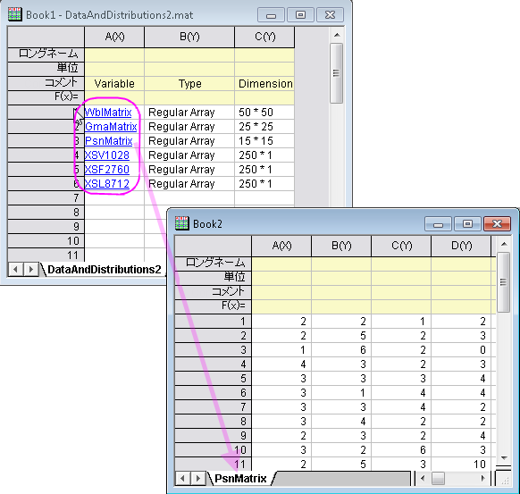

Import-MAT-with-Structure
最終更新：2019/01/06
データ：ファイルからインポート：Matlab(MAT)を選択して、impMatlab ダイアログを開きます。
階層構造にインポートのチェックボックスにチェックを付けると、変数リストのみ、まずワークシートにインポートされます。そして個別の変数名上でクリックして、1列目のリンクされたテキストとして表示し、新しいワークシートに希望の変数を一つ一つインポートできます。

Keywords: MAT, 構造データ, 階層構造